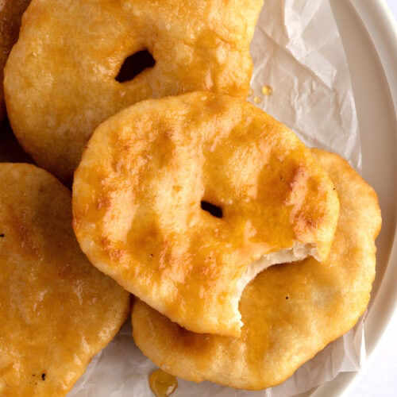

Home
Kerry Bread

Ingredients:
- 2 tablespoons active dry yeast
- 5 cups warm water, divided
- 1 cup cooking oil
- 2/3 cup granulated sugar
- 2 tablespoons salt
- 12 cups all-purpose flour
Instructions:
- In a small bowl, dissolve the yeast in 1 cup of warm water.
- In a large mixing bowl, combine the remaining 4 cups of warm water, oil, sugar, and salt.
- Stir in 6 cups of flour and mix thoroughly.
- Add the yeast mixture and stir to combine.
- Add the remaining 6 cups of flour and knead the dough for 10 minutes.
- Cover and let the dough rise until doubled in size.
To Make Fried Bread:
- Roll out the dough and cut into squares.
- Slit the center of each square.
- Lightly oil a pan and heat over medium heat.
- Fry the dough squares until dark golden brown on both sides.
To Make Loaves:
- Form the dough into loaves and place in greased loaf pans.
- Let rise until doubled again, about 20–30 minutes.
- Bake at 400°F for 30 minutes.